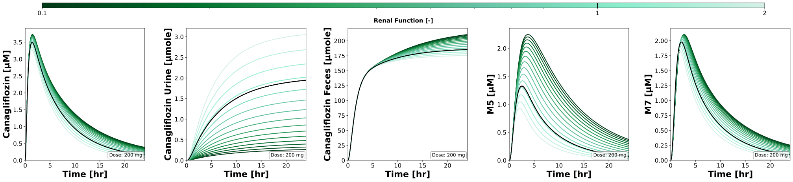
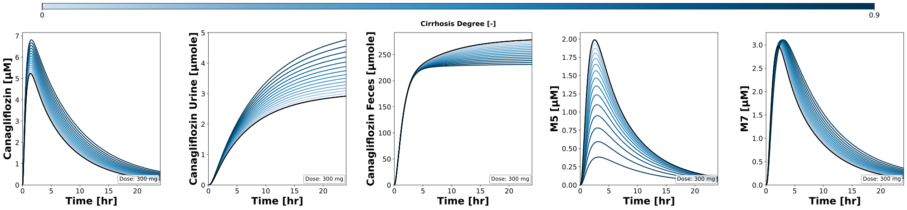
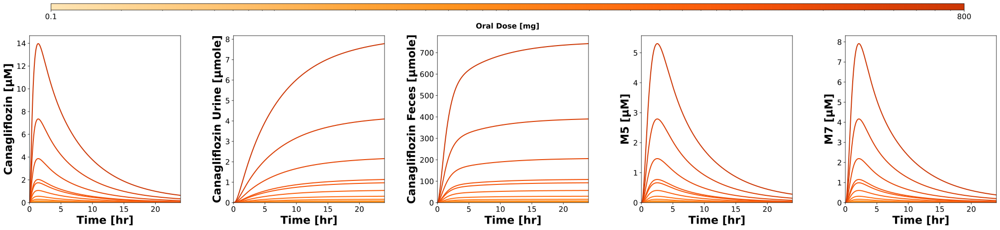
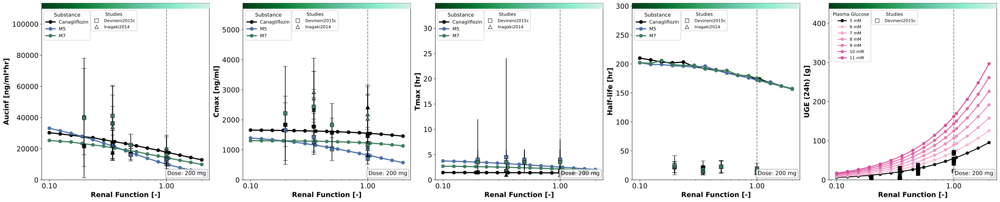
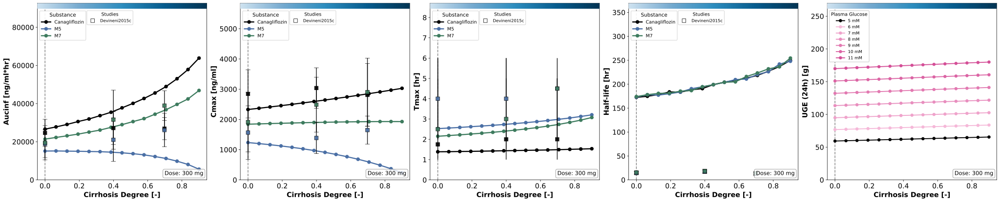
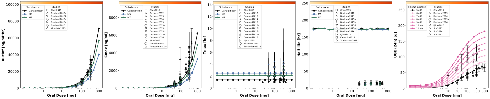

Overview
Models
| model | source |
|---|---|
| model | canagliflozin_body_flat.xml |
Datasets
The experiment has no datasets.
Figures (6)












Code
"""Parameter scans of the canagliflozin model.
The renal function, the degree of cirrhosis and the oral dose are scanned after
a single oral dose of canagliflozin, every scan again for fasting plasma glucose
levels from 5 to 11 mM for the urinary glucose excretion (UGE). The matplotlib
figures show the timecourses of the scans and the pharmacokinetic parameters of
`canagliflozin_pk` together with the data of the studies.
In a run over the draws of the fitted parameters (`run_simulation
pkdb_models.models.canagliflozin --uncertainty`) every point of a scan is
simulated for every draw; the figures draw the median of the draws with the
band of their quantiles.
"""
from pathlib import Path
from typing import Any, ClassVar, Literal, NotRequired, TypedDict, override
import matplotlib.pyplot as plt
import numpy as np
import pandas as pd
from matplotlib.axes import Axes
from matplotlib.cm import ScalarMappable
from matplotlib.colors import Colormap, LogNorm, Normalize
from matplotlib.figure import Figure as MPLFigure
from matplotlib.lines import Line2D
from matplotlib.ticker import ScalarFormatter
from mpl_toolkits.axes_grid1.inset_locator import inset_axes
from pkpdsim.scan import point_band, point_timecourse, scan_dimensions, start_values
from sbmlsim import Q
from sbmlsim.plot.serialization_matplotlib import FigureMPL
from sbmlsim.result import ScanResult
from sbmlsim.simulation import Dimension, Scan, Simulation
from sbmlsim.units import Quantity
from pkdb_models.models.canagliflozin import MODEL
from pkdb_models.models.canagliflozin.canagliflozin_pk import summarize
from pkdb_models.models.canagliflozin.experiments.base_experiment import (
CanagliflozinSimulationExperiment,
)
#: pharmacokinetic parameters and UGE of the studies, one file per scan
STUDY_DATA_PATH = Path(__file__).parent / "study_data"
#: markers of the studies, in the order of the studies in the data
STUDY_MARKERS = ("s", "^", "D", "v", "<", ">", "p", "*", "h", "X")
#: the substances of the panels of the pharmacokinetic parameters
SUBSTANCES = ("canagliflozin", "M5", "M7")
#: pharmacokinetic parameters which scale with the dose
SCALABLE_PARAMETERS = ("cmax", "auc_inf_obs")
#: glucose of the subjects in the UGE data by diabetes status [mM]
DIABETES_GLUCOSE: dict[str, float] = {
"N": 5.0, # normal/healthy
"T2DM": 8.0, # type 2 diabetes
"T1DM": 8.0, # type 1 diabetes
}
class ScanSpec(TypedDict):
"""Definition of a single parameter scan."""
parameter: str
#: value of the reference simulation; the dose scan has none
default: NotRequired[float]
range: np.ndarray
scale: Literal["linear", "log"]
#: name of the colormap property of the experiment
colormap: str
units: str
label: str
def _default(spec: ScanSpec) -> float:
"""Get the value of the reference simulation of a scan.
Raises:
ValueError: for a scan without reference, i.e., the dose scan.
"""
if "default" not in spec:
raise ValueError(f"The scan of '{spec['parameter']}' has no default.")
return spec["default"]
def _norm(spec: ScanSpec) -> Normalize:
"""Get the normalization of the colors of a scan."""
rmin, rmax = float(spec["range"][0]), float(spec["range"][-1])
if spec["scale"] == "log":
return LogNorm(vmin=rmin, vmax=rmax, clip=False)
return Normalize(vmin=rmin, vmax=rmax, clip=False)
def _color_value(spec: ScanSpec, value: float) -> float:
"""Get the position of a value of a scan in its colormap, between 0 and 1."""
rmin, rmax = spec["range"][0], spec["range"][-1]
if spec["scale"] == "log":
return (np.log10(value) - np.log10(rmin)) / np.abs(
np.log10(rmax) - np.log10(rmin)
)
return (value - rmin) / np.abs(rmax - rmin)
def _dose_box(ax: Axes, dose_mg: float) -> None:
"""Annotate the oral dose of a scan in the lower right corner of a panel."""
ax.text(
0.98,
0.02,
f"Dose: {dose_mg:.0f} mg",
transform=ax.transAxes,
fontsize=12,
verticalalignment="bottom",
horizontalalignment="right",
bbox={
"boxstyle": "round",
"facecolor": "white",
"alpha": 0.8,
"edgecolor": "gray",
},
)
def _log_xaxis(ax: Axes, ticks: list[int] | None) -> None:
"""Set a logarithmic x-axis with plain numbers as labels."""
ax.set_xscale("log")
formatter = ScalarFormatter()
ax.xaxis.set_major_formatter(formatter)
formatter.set_scientific(False)
if ticks is not None:
ax.set_xticks(ticks)
ax.set_xticklabels([str(tick) for tick in ticks])
def _studies_legend(
ax: Axes, study_markers: dict[str, str], bbox_x: float, fontsize: int
) -> None:
"""Add the legend of the markers of the studies to a panel."""
handles = [
Line2D(
[],
[],
marker=study_markers[study],
color="white",
markerfacecolor="white",
markeredgecolor="black",
markeredgewidth=0.8,
markersize=8,
linestyle="",
label=study,
)
for study in sorted(study_markers)
]
ax.legend(
handles,
sorted(study_markers),
title="Studies",
loc="upper left",
bbox_to_anchor=(bbox_x, 0.97),
fontsize=fontsize,
title_fontsize=10,
framealpha=0.9,
)
def _plot_study_point(
ax: Axes,
row: pd.Series,
x_pos: float,
marker: str,
face_color: str,
factor: float = 1.0,
) -> float | None:
"""Plot a value of a study: mean with SD, median with range or a range.
Args:
ax: the panel.
row: the row of the study data.
x_pos: position on the x-axis.
marker: marker of the study.
face_color: face color of the marker.
factor: scaling of the values to the dose of the scan, 1 for none.
Returns:
The largest value of the plotted point, `None` if nothing was plotted.
"""
def scaled(value: float) -> float:
return value * factor if factor != 1.0 else value
def errorbar(y: float, yerr: float | list[list[float]], capsize: float) -> None:
ax.errorbar(
x_pos,
y,
yerr=yerr,
fmt=marker,
markerfacecolor=face_color,
markeredgecolor="black",
markeredgewidth=0.8,
markersize=8,
ecolor="black",
capsize=capsize,
capthick=2,
alpha=0.9,
)
def point(y: float) -> None:
ax.plot(
x_pos,
y,
marker=marker,
markerfacecolor=face_color,
markeredgecolor="black",
markeredgewidth=0.8,
markersize=8,
alpha=0.9,
linestyle="",
)
has_min_max = pd.notna(row["min"]) and pd.notna(row["max"])
if pd.notna(row["mean"]):
y_value = scaled(row["mean"])
if pd.notna(row["sd"]):
y_err = scaled(row["sd"])
errorbar(y_value, y_err, capsize=5)
return y_value + y_err
point(y_value)
return y_value
if pd.notna(row["median"]):
y_value = scaled(row["median"])
if has_min_max:
y_min, y_max = scaled(row["min"]), scaled(row["max"])
errorbar(y_value, [[y_value - y_min], [y_max - y_value]], capsize=0)
return y_max
point(y_value)
return y_value
if has_min_max:
# only a range, plotted as a bar around its middle
y_min, y_max = scaled(row["min"]), scaled(row["max"])
y_mid = (y_min + y_max) / 2
errorbar(y_mid, [[y_mid - y_min], [y_max - y_mid]], capsize=5)
return y_max
return None
class CanagliflozinParameterScan(CanagliflozinSimulationExperiment):
"""Scan the effect of parameters on pharmacokinetics and pharmacodynamics."""
#: pharmacokinetic parameters of the scans by simulation key, set by
#: `figures_mpl`
pk_dfs: dict[str, pd.DataFrame]
num_points = 15
glucoses: ClassVar[list[int]] = [5, 6, 7, 8, 9, 10, 11] # [mM]
#: the end of the scans of the pharmacokinetics [hr]: the terminal phase
#: (half-life about 12-17 hr) for the half-life and the AUC, as sampled by
#: the studies (72-96 hr); the scans of the glucose give the UGE of the
#: first day and end with it
tend_pk = 96
tend_uge = 24
#: the end of the timecourses of the figures [hr], the first day
tend_shown = 24
#: the output steps of the simulations per hour, every 0.3 min
steps_per_hr = 200
@staticmethod
def _times_uncertainty(tend: float) -> tuple[float, ...]:
"""Get the output times of a run over the draws to `tend` hr [min].
Every 2 min in the first 6 hr (absorption and maximum, tmax about 1.5
hr), every 15 min after them. The grid of `steps_per_hr` for every
draw of every point of the 24 scans would need about 70 GB, this grid
2.3 GB.
"""
end = tend * 60
return tuple(
np.unique(
np.concatenate(
[
np.linspace(0, 360, 181),
np.linspace(360, end, int((end - 360) / 15) + 1),
]
)
).tolist()
)
#: the opacity of the bands of the draws of the fitted parameters
band_alpha = 0.15
#: the upper limit of the axes of the parameters relative to the largest
#: value, room for the legends above the curves
legend_headroom = 1.45
substance_colors: ClassVar[dict[str, str]] = {
"canagliflozin": "black",
"M5": "#4A6FA5",
"M7": "#3D7B5E",
}
study_data_files: ClassVar[dict[str, str]] = {
"renal_scan": str(STUDY_DATA_PATH / "parameters_renal.tsv"),
"hepatic_scan": str(STUDY_DATA_PATH / "parameters_hepatic.tsv"),
"dose_scan": str(STUDY_DATA_PATH / "parameters_dose.tsv"),
}
scan_map: ClassVar[dict[str, ScanSpec]] = {
"renal_scan": {
"parameter": "KI__f_renal_function",
"default": 1.0,
"range": np.sort(
np.append(np.logspace(-1, np.log10(2.0), num=num_points), [1.0])
), # [0.1, 2.0]
"scale": "log",
"colormap": "renal_cmap",
"units": "dimensionless",
"label": "Renal Function [-]",
},
"hepatic_scan": {
"parameter": "f_cirrhosis",
"default": 0.0,
"range": np.linspace(0, 0.9, num=num_points),
"scale": "linear",
"colormap": "cirrhosis_cmap",
"units": "dimensionless",
"label": "Cirrhosis Degree [-]",
},
"dose_scan": {
"parameter": "PODOSE_can",
"range": np.sort(
np.append(
np.logspace(np.log10(0.1), np.log10(800), num=num_points), [100]
)
), # [0.1, 800] mg
"scale": "log",
"colormap": "doses_cmap",
"units": "mg",
"label": "Oral Dose [mg]",
},
}
#: oral dose of the scans [mg]; the dose scan scans the dose
scan_doses: ClassVar[dict[str, float]] = {
"renal_scan": 200,
"hepatic_scan": 300,
}
@staticmethod
def _sim_key(scan_key: str) -> str:
"""Key of the simulation of a scan, e.g. `scan_po_renal`."""
return f"scan_po_{scan_key.removesuffix('_scan')}"
def _scan(
self,
scan_key: str,
tend: float,
changes: dict[str, Quantity] | None = None,
) -> Scan:
"""Get the simulation of a scan, a single oral dose.
Args:
scan_key: key of the scan in `scan_map`.
tend: the end of the simulation [hr].
changes: further changes before the simulation, e.g. the glucose.
"""
spec = self.scan_map[scan_key]
preinit_changes: dict[str, Quantity | float] = {**self.default_changes()}
if scan_key in self.scan_doses:
preinit_changes["PODOSE_can"] = Q(self.scan_doses[scan_key], "mg")
if changes:
preinit_changes.update(changes)
grid: dict[str, Any] = (
{"steps": int(self.steps_per_hr * tend)}
if self.uncertainty is None
else {"times": self._times_uncertainty(tend)}
)
return Scan(
simulation=Simulation(
time_unit="min",
end=tend * 60,
preinit_changes=preinit_changes,
**grid,
),
dimensions=[
Dimension(
"dim_scan",
values={spec["parameter"]: Q(spec["range"], spec["units"])},
),
],
)
@override
def simulations(self) -> dict[str, Scan]:
scans: dict[str, Scan] = {}
for scan_key in self.scan_map:
scans[self._sim_key(scan_key)] = self._scan(scan_key, self.tend_pk)
# scans with different glucose levels for UGE
for glc in self.glucoses:
for scan_key in self.scan_map:
scans[f"{self._sim_key(scan_key)}_glc{glc}"] = self._scan(
scan_key, self.tend_uge, changes={"[KI__fpg]": Q(glc, "mM")}
)
return scans
@override
def figures_mpl(self) -> dict[str, FigureMPL]:
# the pharmacokinetic parameters of the scans of `scan_map`, the scans
# of the glucose are only used for the UGE
self.pk_dfs = self.calculate_canagliflozin_pk(
scans=[self._sim_key(scan_key) for scan_key in self.scan_map]
)
return {
**self.figures_mpl_timecourses(),
**self.figures_mpl_pharmacokinetics(),
}
def _cmap(self, spec: ScanSpec) -> Colormap:
"""Get the colormap of a scan."""
cmap: Colormap = getattr(self, spec["colormap"])
return cmap
def _across(self) -> str | None:
"""Get the dimension of the draws of the fitted parameters, `None` without."""
return None if self.uncertainty is None else self.uncertainty.id
def _scan_dimension(self, res: ScanResult) -> str:
"""Get the dimension of the scanned parameter, besides the draws."""
(scandim,) = scan_dimensions(res, self._across())
return scandim
def _scan_values(self, res: ScanResult, spec: ScanSpec) -> Quantity:
"""Get the values of the scanned parameter at the points of a scan."""
parameter_id = spec["parameter"]
values = start_values(res, parameter_id)
across = self._across()
if across is not None:
values = values.isel({across: 0})
return Q(values.values, res.units[parameter_id])
def _band(
self, res: ScanResult, sid: str, point: dict[str, int]
) -> tuple[np.ndarray, np.ndarray, np.ndarray, np.ndarray]:
"""Get the timecourse of a point of a scan with the band of its draws.
Returns:
The time, the lower quantile, the values (the median of the draws
in a run over them) and the upper quantile; without draws the
quantiles are the values.
"""
run = self.uncertainty
if run is None:
time, values = point_timecourse(res, sid, **point)
return time, values, values, values
return point_band(res, sid, across=run.id, quantiles=run.quantiles, **point)
def _scan_dose(self, res: ScanResult) -> float:
"""Get the oral dose of a scan [mg], of its first simulation."""
values = start_values(res, "PODOSE_can").values
dose = Q(values.flat[0], res.units["PODOSE_can"])
return float(dose.to("mg").magnitude)
def _plot_timecourse_scan(self, scan_key: str, sim_key: str) -> MPLFigure:
"""Create the timecourses of the first day of a parameter scan."""
sids = [
"[Cve_can]",
"Aurine_can",
"Afeces_can",
"[Cve_m5]",
"[Cve_m7]",
]
spec = self.scan_map[scan_key]
rmin, rmax = spec["range"][0], spec["range"][-1]
cmap = self._cmap(spec)
# 1 row x multiple columns
nrows = 1
ncols = len(sids)
figsize = (6 * ncols, 6 * nrows)
f, axes = plt.subplots(
nrows=nrows,
ncols=ncols,
figsize=figsize,
sharey=False,
sharex=True,
dpi=150,
squeeze=False,
)
plt.subplots_adjust(
top=0.88, bottom=0.1, left=0.08, right=0.98, hspace=0.3, wspace=0.35
)
res = self.results[f"task_{sim_key}"]
units = res.units
scandim = self._scan_dimension(res)
par_vec = self._scan_values(res, spec)
for k_sid, sid in enumerate(sids):
ax: Axes = axes[0, k_sid]
ymax = 0.0
t_vec_default: Quantity | None = None
c_vec_default: Quantity | None = None
for k_par, par in enumerate(par_vec):
time, lower, values, upper = self._band(res, sid, {scandim: k_par})
t_vec = Q(time, units["time"]).to(self.units["time"])
c_vec = Q(values, units[sid]).to(self.units[sid])
c_upper = Q(upper, units[sid]).to(self.units[sid])
shown = t_vec.magnitude <= self.tend_shown
ymax = max(ymax, np.nanmax(c_upper.magnitude[shown]))
par_value = par.magnitude if hasattr(par, "magnitude") else par
if scan_key != "dose_scan" and np.isclose(_default(spec), par_value):
color = "black"
t_vec_default, c_vec_default = t_vec, c_vec
else:
# color by the position in the scan range
color = cmap(_color_value(spec, par_value))
if self.uncertainty is not None:
ax.fill_between(
t_vec.magnitude,
Q(lower, units[sid]).to(self.units[sid]).magnitude,
c_upper.magnitude,
color=color,
alpha=self.band_alpha,
linewidth=0,
)
ax.plot(
t_vec.magnitude,
c_vec.magnitude,
color=color,
linewidth=2.0,
)
# the reference simulation on top
if t_vec_default is not None and c_vec_default is not None:
ax.plot(
t_vec_default.magnitude,
c_vec_default.magnitude,
color="black",
linewidth=2.0,
)
ax.set_xlabel(
f"{self.label_time} [{self.units['time']}]",
fontdict=self.font,
)
ax.tick_params(axis="x", labelsize=self.tick_font_size)
ax.tick_params(axis="y", labelsize=self.tick_font_size)
ax.set_ylabel(
f"{self.labels[sid]} [{self.units[sid]}]",
fontdict=self.font,
)
ax.set_ylim(bottom=0.0, top=1.05 * ymax)
ax.set_xlim(0, self.tend_shown)
if scan_key in self.scan_doses:
_dose_box(ax, self._scan_dose(res))
# add colorbar
cb_ax = f.add_axes(rect=(0.1, 1.0, 0.85, 0.03))
cb_ax.set_in_layout(True)
cbar = f.colorbar(
ScalarMappable(norm=_norm(spec), cmap=cmap),
cax=cb_ax,
orientation="horizontal",
)
# the gradient as vector cells: matplotlib rasterizes it into an
# embedded image, which some SVG viewers do not show; the edges of
# the cells in their color close the seams between them
if cbar.solids is not None:
cbar.solids.set_rasterized(False)
cbar.solids.set_edgecolor("face")
# ticks
ticks = [rmin, rmax]
if scan_key != "dose_scan" and _default(spec) not in ticks:
ticks.append(_default(spec))
ticks = sorted(ticks)
cbar.set_ticks(ticks)
# three significant digits, e.g. 0.1 for the lowest dose
tick_labels = [f"{tick:.3g}" for tick in ticks]
cbar.set_ticklabels(tick_labels, size=15, weight="normal")
cbar.ax.set_xlabel(spec["label"], size=15, weight="bold")
if scan_key != "dose_scan":
cbar.ax.axvline(x=_default(spec), color="black", linewidth=2)
return f
def figures_mpl_timecourses(self) -> dict[str, MPLFigure]:
"""Timecourse plots for key variables as parameter scan."""
return {
f"fig_can_po__{scan_key.removesuffix('_scan')}__timecourse": (
self._plot_timecourse_scan(scan_key, self._sim_key(scan_key))
)
for scan_key in self.scan_map
}
def _condition_map(self, scan_key: str) -> dict[str, float]:
"""Get the value of the scanned parameter of the conditions of the studies."""
if scan_key == "renal_scan":
return {
"normal": self.renal_map["Normal renal function"],
"mild": self.renal_map["Mild renal impairment"],
"moderate": self.renal_map["Moderate renal impairment"],
"severe": self.renal_map["Severe renal impairment"],
}
if scan_key == "hepatic_scan":
return {
"normal": self.cirrhosis_map["Control"],
"mild": self.cirrhosis_map["Mild cirrhosis"],
"moderate": self.cirrhosis_map["Moderate cirrhosis"],
"severe": self.cirrhosis_map["Severe cirrhosis"],
}
return {}
@staticmethod
def _condition(row: pd.Series) -> str | None:
"""Get the condition of a row of the study data in lower case."""
return str(row["condition"]).lower() if pd.notna(row["condition"]) else None
def _add_study_data_to_plot(
self,
ax: Axes,
scan_key: str,
substance: str,
parameter: str,
study_data_file: str,
) -> tuple[float, dict[str, str]] | None:
"""Plot a pharmacokinetic parameter of a substance of the studies.
The values of studies with another dose than the scan are scaled to the
dose of the scan where the parameter scales with the dose, and left out
otherwise.
Returns:
The largest value and the markers of the studies by study, `None`
if the studies have no data of the parameter.
"""
df = pd.read_csv(study_data_file, sep="\t", comment="#")
df_filtered = df[
(df["substance"] == substance) & (df["parameter"] == parameter)
].copy()
if len(df_filtered) == 0:
return None
res = self.results[f"task_{self._sim_key(scan_key)}"]
condition_map = self._condition_map(scan_key)
study_marker_map = {
str(study): STUDY_MARKERS[i % len(STUDY_MARKERS)]
for i, study in enumerate(df_filtered["study"].unique())
}
face_color = self.substance_colors.get(substance, "black")
max_y = 0.0
for _, row in df_filtered.iterrows():
if scan_key == "dose_scan":
x_pos = row["dose"]
dose_ratio = 1.0 # no scaling for dose scan
else:
# renal/hepatic scans: the condition is the position
condition = self._condition(row)
if condition not in condition_map:
continue
x_pos = condition_map[condition]
# scaling to the dose of the scan
sim_dose_value = self._scan_dose(res)
study_dose = row["dose"]
dose_ratio = sim_dose_value / study_dose if study_dose > 0 else 1.0
if (
not pd.isna(study_dose)
and study_dose != sim_dose_value
and parameter not in SCALABLE_PARAMETERS
):
continue
factor = dose_ratio if parameter in SCALABLE_PARAMETERS else 1.0
y_top = _plot_study_point(
ax,
row,
x_pos,
marker=study_marker_map.get(str(row["study"]), "s"),
face_color=face_color,
factor=factor,
)
if y_top is not None:
max_y = max(max_y, y_top)
return max_y, study_marker_map
def _add_uge_study_data_to_plot(
self, ax: Axes, scan_key: str, study_data_file: str
) -> tuple[float, dict[str, str]] | None:
"""Plot the 24 hr UGE of the studies, colored by the glucose of the subjects.
For the renal and hepatic scans only the studies with the dose of the
scan are shown.
Returns:
The largest value and the markers of the studies by study, `None`
if the studies have no UGE data.
"""
df = pd.read_csv(study_data_file, sep="\t", comment="#")
df_filtered = df[df["parameter"] == "UGE_24hr"].copy()
if len(df_filtered) == 0:
return None
sim_dose_value = None
if scan_key in self.scan_doses:
res_glc = self.results[
f"task_{self._sim_key(scan_key)}_glc{self.glucoses[0]}"
]
sim_dose_value = self._scan_dose(res_glc)
condition_map = self._condition_map(scan_key)
study_marker_map = {
str(study): STUDY_MARKERS[i % len(STUDY_MARKERS)]
for i, study in enumerate(df_filtered["study"].unique())
}
max_y = 0.0
for _, row in df_filtered.iterrows():
if scan_key == "dose_scan":
x_pos = row["dose"]
else:
# renal/hepatic scans: only the dose of the scan
study_dose = row["dose"]
if pd.isna(study_dose) or study_dose != sim_dose_value:
continue
condition = self._condition(row)
if condition not in condition_map:
continue
x_pos = condition_map[condition]
# the glucose of the subjects gives the color
diabetes_status = row.get("diabetes", "N")
if pd.isna(diabetes_status):
diabetes_status = "N"
glucose_level = DIABETES_GLUCOSE.get(str(diabetes_status), 5.0)
face_color = self.glucose_colors.get(glucose_level, self.glucose_colors[5])
y_top = _plot_study_point(
ax,
row,
x_pos,
marker=study_marker_map.get(str(row["study"]), "s"),
face_color=face_color,
)
if y_top is not None:
max_y = max(max_y, y_top)
return max_y, study_marker_map
def _plot_scan_combined(self, scan_key: str, pk_parameters: list[str]) -> MPLFigure:
"""Create combined figure with all PK parameters and UGE for a single scan type."""
ncols = 5
f, axes = plt.subplots(
nrows=1,
ncols=ncols,
figsize=(6 * ncols, 6),
dpi=150,
layout="constrained",
squeeze=False,
)
axes = axes.flatten()
for k, pk_key in enumerate(pk_parameters):
self._plot_pk_subplot(axes[k], scan_key, pk_key)
self._plot_uge_subplot(axes[4], scan_key)
return f
def _plot_pk_subplot(self, ax: Axes, scan_key: str, pk_key: str) -> None:
"""Plot a single PK parameter subplot with all three substances."""
spec = self.scan_map[scan_key]
sim_key = self._sim_key(scan_key)
# only show reference line for non-dose scans
if scan_key != "dose_scan":
ax.axvline(x=_default(spec), color="grey", linestyle="--", linewidth=1.5)
res = self.results[f"task_{sim_key}"]
x_vec = self._scan_values(res, spec)
molecular_weights = {
"canagliflozin": self.Mr.can,
"M5": self.Mr.m5,
"M7": self.Mr.m7,
}
ymax = 0.0
df = self.pk_dfs[sim_key]
for substance in SUBSTANCES:
df_sub = df[df.substance == substance].copy()
if len(df_sub) == 0:
continue
unit = df_sub[f"{pk_key}_unit"].to_numpy()[0]
y, y_lower, y_upper = self._summary(df_sub, pk_key, unit)
# convert from molar to mass units
if pk_key in SCALABLE_PARAMETERS:
y, y_lower, y_upper = (
v * molecular_weights[substance] for v in (y, y_lower, y_upper)
)
y, y_lower, y_upper = (
v.to(self.pk_units[pk_key]) for v in (y, y_lower, y_upper)
)
color = self.substance_colors[substance]
if self.uncertainty is not None:
ax.fill_between(
x_vec.magnitude,
y_lower.magnitude,
y_upper.magnitude,
color=color,
alpha=self.band_alpha,
linewidth=0,
)
ax.plot(
x_vec.magnitude,
y.magnitude,
marker="o",
linestyle="-",
color=color,
markeredgecolor=color,
linewidth=2.5,
markersize=7,
label=substance.capitalize(),
)
ymax = max(ymax, np.nanmax(y_upper.magnitude))
# the study data of all substances, the markers by study
study_markers: dict[str, str] = {}
study_max_y = 0.0
for substance in SUBSTANCES:
study_data = self._add_study_data_to_plot(
ax, scan_key, substance, pk_key, self.study_data_files[scan_key]
)
if study_data is not None:
study_max_y = max(study_max_y, study_data[0])
study_markers.update(study_data[1])
ymax = max(ymax, study_max_y)
ax.tick_params(axis="x", labelsize=self.tick_font_size)
ax.tick_params(axis="y", labelsize=self.tick_font_size)
ax.set_xlabel(spec["label"], fontdict=self.scan_font)
ax.set_ylabel(
f"{self.pk_labels[pk_key].capitalize()} [{self.pk_units[pk_key]}]",
fontdict=self.scan_font,
)
ax.set_ylim(bottom=0.0, top=self.legend_headroom * ymax)
if spec["scale"] == "log":
_log_xaxis(ax, [1, 10, 100, 800] if scan_key == "dose_scan" else None)
if scan_key in self.scan_doses:
_dose_box(ax, self._scan_dose(res))
# legends
handles, labels = ax.get_legend_handles_labels()
if labels:
substance_labels = [substance.capitalize() for substance in SUBSTANCES]
substance_handles = [
handle
for handle, label in zip(handles, labels, strict=True)
if label in substance_labels
]
if substance_handles:
leg1 = ax.legend(
substance_handles,
[label for label in labels if label in substance_labels],
title="Substance",
loc="upper left",
bbox_to_anchor=(0, 0.97),
fontsize=10,
title_fontsize=11,
framealpha=0.9,
)
ax.add_artist(leg1)
if study_markers:
_studies_legend(ax, study_markers, bbox_x=0.28, fontsize=9)
self._add_colorbar_strip(ax, spec)
def _summary(
self, df: pd.DataFrame, key: str, unit: str
) -> tuple[Quantity, Quantity, Quantity]:
"""Get a parameter at the points of a scan, the median and the band of the draws.
Returns:
The values (the median of the draws in a run over them), and the
lower and the upper quantile, the values without draws.
"""
run = self.uncertainty
if run is None:
values = Q(df[key].to_numpy(dtype=float), unit)
return values, values, values
summary = summarize(df, key, run.quantiles)
median, lower, upper = (
Q(summary[column].to_numpy(), unit)
for column in ["median", "lower", "upper"]
)
return median, lower, upper
def _uge_24h(self, res: ScanResult, k_par: int) -> tuple[float, float, float]:
"""Get the UGE after 24 hr of a point of a scan with the band of its draws.
Returns:
The lower quantile, the value (the median of the draws in a run
over them) and the upper quantile [g].
"""
time, lower, values, upper = self._band(
res, "KI__UGE", {self._scan_dimension(res): k_par}
)
k_24h = int(np.argmin(np.abs(time - 24 * 60)))
unit = res.units["KI__UGE"]
lower_24h, value_24h, upper_24h = (
Q(v[k_24h], unit).to(self.units["KI__UGE"]).magnitude
for v in (lower, values, upper)
)
return float(lower_24h), float(value_24h), float(upper_24h)
def _plot_uge_subplot(self, ax: Axes, scan_key: str) -> None:
"""Plot UGE subplot with multiple glucose levels."""
spec = self.scan_map[scan_key]
sim_key = self._sim_key(scan_key)
if scan_key != "dose_scan":
ax.axvline(x=_default(spec), color="grey", linestyle="--", linewidth=1.5)
res_sample = self.results[f"task_{sim_key}_glc{self.glucoses[0]}"]
x_vec = self._scan_values(res_sample, spec)
# UGE at 24 hr for each glucose level
for glc in self.glucoses:
res_glc = self.results[f"task_{sim_key}_glc{glc}"]
uge_lower, uge_values, uge_upper = (
np.array(v)
for v in zip(
*(
self._uge_24h(res_glc, k_par)
for k_par in range(len(x_vec.magnitude))
),
strict=True,
)
)
if self.uncertainty is not None:
ax.fill_between(
x_vec.magnitude,
uge_lower,
uge_upper,
color=self.glucose_colors[glc],
alpha=self.band_alpha,
linewidth=0,
)
ax.plot(
x_vec.magnitude,
uge_values,
marker="o",
linestyle="-",
color=self.glucose_colors[glc],
linewidth=2,
markersize=6,
label=f"{glc} mM",
)
ax.set_xlabel(spec["label"], fontdict=self.scan_font)
ax.set_ylabel(
f"{self.labels['KI__UGE']} (24h) [{self.units['KI__UGE']}]",
fontdict=self.scan_font,
)
ax.tick_params(axis="x", labelsize=self.tick_font_size)
ax.tick_params(axis="y", labelsize=self.tick_font_size)
ymax = ax.get_ylim()[1]
study_markers: dict[str, str] = {}
study_data = self._add_uge_study_data_to_plot(
ax, scan_key, self.study_data_files[scan_key]
)
if study_data is not None:
ymax = max(ymax, study_data[0])
study_markers.update(study_data[1])
ax.set_ylim(bottom=0.0, top=self.legend_headroom * ymax)
if spec["scale"] == "log":
_log_xaxis(ax, [10, 30, 100, 300, 800] if scan_key == "dose_scan" else None)
if scan_key in self.scan_doses:
res_glc = self.results[f"task_{sim_key}_glc{self.glucoses[0]}"]
_dose_box(ax, self._scan_dose(res_glc))
# legends
handles, labels = ax.get_legend_handles_labels()
glucose_handles = [
handle
for handle, label in zip(handles, labels, strict=True)
if "mM" in label
]
if glucose_handles:
leg1 = ax.legend(
glucose_handles,
[label for label in labels if "mM" in label],
title="Plasma Glucose",
loc="upper left",
bbox_to_anchor=(0, 0.97),
fontsize=9,
title_fontsize=10,
framealpha=0.9,
)
ax.add_artist(leg1)
if study_markers:
_studies_legend(ax, study_markers, bbox_x=0.24, fontsize=9)
self._add_colorbar_strip(ax, spec)
def _add_colorbar_strip(self, ax: Axes, spec: ScanSpec) -> None:
"""Add a colorbar strip at the top of a subplot."""
height_frac = 0.03
rmin, rmax = spec["range"][0], spec["range"][-1]
norm = _norm(spec)
strip_ax = inset_axes(
ax,
width="100%",
height=f"{height_frac * 100:.2f}%",
loc="upper center",
borderpad=0,
)
# colorbar gradient as vector cells: an image would be embedded as a
# raster, which some SVG viewers do not show; the edges of the cells in
# their color close the seams between them
if spec["scale"] == "log":
xs = np.geomspace(max(rmin, 1e-12), rmax, 256)
else:
xs = np.linspace(rmin, rmax, 256)
strip_ax.pcolormesh(
np.linspace(0, 1, len(xs) + 1),
[0, 1],
xs[np.newaxis, :],
cmap=self._cmap(spec),
norm=norm,
shading="flat",
edgecolors="face",
rasterized=False,
)
strip_ax.set_xlim(0, 1)
strip_ax.set_ylim(0, 1)
strip_ax.set_axis_off()
strip_ax.set_zorder(ax.get_zorder() + 1)
def figures_mpl_pharmacokinetics(self) -> dict[str, MPLFigure]:
"""Visualize dependency of pharmacokinetics parameters."""
pk_parameters = ["auc_inf_obs", "cmax", "tmax", "thalf"]
return {
f"fig_can_po__{scan_key.removesuffix('_scan')}": self._plot_scan_combined(
scan_key, pk_parameters
)
for scan_key in self.scan_map
}
if __name__ == "__main__":
MODEL.run_experiments(
CanagliflozinParameterScan, output_dir=CanagliflozinParameterScan.__name__
)